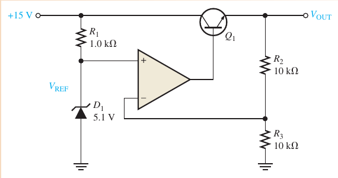
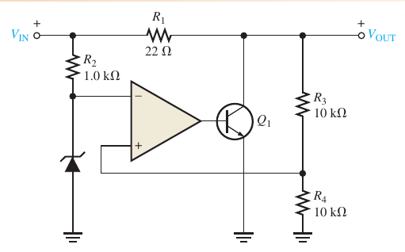
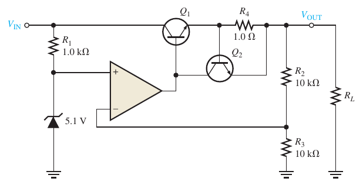
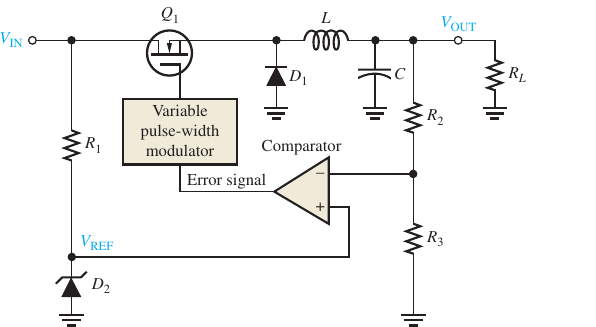
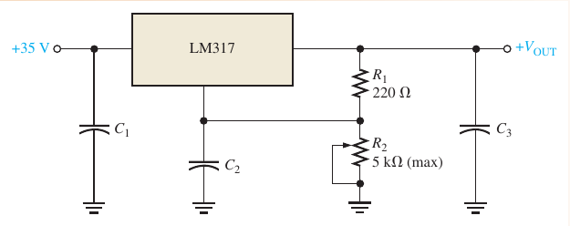
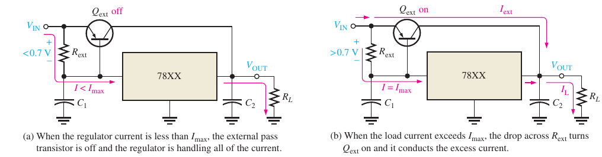

08. Ổn áp và IC ổn áp
Line/load regulation, ổn áp nối tiếp, song song, xung, IC 78XX/79XX/LM317 và transistor pass ngoài (Floyd chương 17).
EASA Part-66 4.1.3 linear ICs (extension)CLO: CLO1, CLO3Thời lượng: ≈ 5 giờCâu hỏi: 107 (28 gốc)
Floyd 9e Ch.17 · Bản đồ nội dung sách
🎯 Sau module này bạn sẽ- Tính line và load regulation
- Phân tích ổn áp nối tiếp, song song, xung
- Thiết kế mạch LM317 và giới hạn dòng
- Chọn IC 78XX/79XX và transistor pass ngoài
PHẦN 1/5
01
Nền tảng ổn áp
- Line/load regulation
- Bốn khối
- Nối tiếp và song song
Phần 1 · Nền tảng
Hai thước đo độ ổn định
- Line regulation: đổi điện áp vào, điện áp ra có đứng yên không
- Load regulation: đổi dòng tải, điện áp ra có đứng yên không
📖 Giải thích cho người mới bắt đầu
Giá trị phần trăm càng nhỏ càng tốt.
Phần 1 · Nền tảng
Bốn khối của bộ ổn áp
| Khối | Vai trò |
|---|
| Tham chiếu | điện áp chuẩn (zener) |
| Mạch lấy mẫu | chia điện áp ra |
| Bộ phát hiện sai số | so sánh mẫu với tham chiếu |
| Phần tử điều khiển | transistor pass |
📖 Giải thích cho người mới bắt đầu
Mọi bộ ổn áp là một vòng hồi tiếp âm: lấy mẫu → so sánh → điều khiển.
Phần 1 · Nền tảng
Ổn áp tuyến tính nối tiếp

Floyd Hình 17–7📖 Giải thích cho người mới bắt đầu
Op-amp lái transistor pass sao cho điện áp lấy mẫu bằng VREF.
Phần 1 · Nền tảng
Ổn áp tuyến tính song song

Floyd Hình 17–15- Phần tử điều khiển mắc song song với tải
- Dòng ngắn mạch bị R1 giới hạn: IL(max) = VIN/R1
📖 Giải thích cho người mới bắt đầu
Đơn giản và tự bảo vệ ngắn mạch nhưng kém hiệu suất.
PHẦN 2/5
02
Phương pháp
- Giới hạn dòng
- Ổn áp xung
- IC ổn áp
Phần 2 · Phương pháp
Giới hạn dòng

Floyd Hình 17–9📖 Giải thích cho người mới bắt đầu
Khi sụt áp trên R4 đạt 0,7 V, Q2 dẫn và lấy bớt dòng của Q1.
Phần 2 · Phương pháp
Ổn áp xung

Floyd Hình 17–17📖 Giải thích cho người mới bắt đầu
Transistor đóng/ngắt hoàn toàn nên tiêu tán rất ít; bộ lọc LC lấy trung bình.
Phần 2 · Phương pháp
IC ổn áp: 78XX/79XX và LM317

Floyd Hình 17–30- 78XX: dương cố định; 79XX: âm cố định
📖 Giải thích cho người mới bắt đầu
Hai chữ số cuối của 78XX/79XX là điện áp ra.
Phần 2 · Phương pháp
Tăng dòng bằng transistor pass ngoài

Floyd Hình 17–35📖 Giải thích cho người mới bắt đầu
Khi sụt áp trên Rext đạt 0,7 V, Qext dẫn phần dòng dư thừa.
PHẦN 3/5
03
Ví dụ từ sách
- Ổn áp nối tiếp
- Song song, xung
- IC ổn áp
Phần 3 · Ví dụ từ sách
Điều chỉnh và ổn áp nối tiếp (Floyd Bài 1–9)
Ví dụ · Floyd Bài 1–4
Line = 0,0333 %; Load = 1,01 %
Ví dụ · Floyd Bài 7–9
(1 + 5,6/2,2)·2,4 = 8,51 V ; R3 = 4,7 kΩ → 5,26 V ; VREF = 2,7 V → 9,57 V
📖 Giải thích cho người mới bắt đầu
Đối chiếu với đáp án sách: 0,0333 %, 1,01 %, 8,51 V, 9,57 V.
Phần 3 · Ví dụ từ sách
Giới hạn dòng, song song, xung (Floyd Bài 10–17)
Ví dụ · Floyd Bài 10–11
R4 = 0,7/0,25 = 2,8 Ω; P = 0,175 W; R4/2 → 500 mA
Ví dụ · Floyd Bài 13, 15
ΔIC = 1 V/100 Ω = 10 mA ; IL(max) = 250 mA, PR1 = 6,25 W
Ví dụ · Floyd Bài 17
T = 100 μs, ton = 40 μs → 40 %
📖 Giải thích cho người mới bắt đầu
Tất cả khớp đáp án sách (500 mA, 10 mA, 250 mA, 6,25 W, 40 %).
Phần 3 · Ví dụ từ sách
IC ổn áp (Floyd Bài 20–27)
Ví dụ · Floyd Bài 21, 23
VOUT = 1,25 × 11 + 50 μA × 10 kΩ = 14.25 V; I = 1.30 mA
Ví dụ · Floyd Bài 25, 27
Rext = 2.8 Ω ; Rlimit = 0.35 Ω
📖 Giải thích cho người mới bắt đầu
LM317: 14,3 V và 1,3 mA đúng sách.
PHẦN 4/5
04
Sai lầm thường gặp
Phần 4 · Sai lầm và mở rộng
Nhiệt là giới hạn chính
Công suất toả nhiệtBộ ổn áp tuyến tính tiêu tán (VIN − VOUT)·IL: chọn VIN vừa đủ trên mức dropout và gắn tản nhiệt.
📖 Giải thích cho người mới bắt đầu
Hiệu suất ≈ VOUT/VIN cho ổn áp tuyến tính.
Phần 4 · Sai lầm và mở rộng
Chọn loại ổn áp
- Xung hiệu suất cao nhưng có gợn và nhiễu điện từ
- Ổn áp song song luôn tiêu hao dòng ngay cả khi không tải
📖 Giải thích cho người mới bắt đầu
Chọn theo hiệu suất, nhiễu và độ phức tạp.
Phần 4 · Sai lầm và mở rộng
Giới hạn thực tế
- Điện áp vào phải lớn hơn VOUT một khoảng dropout (khoảng 2 V cho 78XX, 1,5–2 V cho LM317)
- Cần tụ lọc ở ngõ vào và ngõ ra để tránh dao động
📖 Giải thích cho người mới bắt đầu
Giá trị dropout lấy từ datasheet của chính linh kiện.
PHẦN 5/5
05
Ứng dụng và tổng kết
- Nguồn điện tử hàng không (minh hoạ)
- Bảng công thức
- Ba ý chính
Phần 5 · Ứng dụng và tổng kết
Nguồn ổn định cho điện tử hàng không
- Minh hoạ: cấp nguồn ổn định cho mạch cảm biến và vi xử lý từ nguồn điện thay đổi của tàu bay
- Minh hoạ: ổn áp xung giảm tổn hao nhiệt trong khoang thiết bị kín
📖 Giải thích cho người mới bắt đầu
Chỉ minh hoạ nguyên lý, không mô tả hệ thống cụ thể.
Phần 5 · Ứng dụng và tổng kết
Bảng công thức chương 17
| Đại lượng | Công thức |
|---|
| Line / Load | ΔVOUT/ΔVIN ; (VNL−VFL)/VFL |
| Nối tiếp | (1 + R2/R3)·VREF |
| Giới hạn dòng | 0.7 V / R |
| Xung | VOUT ≈ duty × VIN |
| LM317 | 1.25(1 + R2/R1) + IADJ·R2 |
📖 Giải thích cho người mới bắt đầu
Năm dòng đủ cho phần tính toán của chương.
Phần 5 · Ứng dụng và tổng kết
Ba ý chính
- Ổn áp = vòng hồi tiếp âm với tham chiếu
- Tuyến tính: êm nhưng nóng; xung: hiệu suất nhưng nhiễu
- Module sau: PCB
📖 Giải thích cho người mới bắt đầu
Hãy nhớ công thức 0,7 V/R cho mọi mạch giới hạn dòng.
Nội dung chi tiết
1. Nội dung chi tiết đối chiếu sách
- Floyd §17–1 điều chỉnh; §17–2 ổn áp nối tiếp; §17–3 ổn áp song song; §17–4 ổn áp xung; §17–5 IC ổn áp (78XX, 79XX, LM317, LM337); §17–6 tăng dòng bằng transistor pass ngoài và giới hạn dòng.
- Không có chương Jaeger tương ứng trong bản đồ đề cương.
2. Năm ví dụ có lời giải số
Ví dụ · 1
Load regulation = (10 − 9.90)/9.90 × 100 % = 1.01 %
Ví dụ · 2
VOUT = (1 + 5.6/2.2) × 2.4 = 8.51 V
Ví dụ · 3
R4 = 0.7/0.25 = 2.8 Ω, P = 0.175 W
Ví dụ · 4
LM317: VOUT = 1.25 × 11 + 0.5 = 14.25 V
Ví dụ · 5
Rext = 0.7/0.25 = 2.8 Ω for IREG = 250 mA
3. Bối cảnh lịch sử/lý thuyết
Ổn áp IC ba chân (họ 78XX) làm cho việc cấp nguồn trở nên đơn giản; ổn áp xung thay thế dần ổn áp tuyến tính khi cần hiệu suất cao.
4. Ca ứng dụng trên tàu bay (minh hoạ)
Minh hoạ: nguồn ổn định cho điện tử hàng không từ thanh cái thay đổi. Không mô tả hệ thống cụ thể.
5. Bẫy khi làm bài thi
- Nhầm line regulation với load regulation.
- Quên cộng IADJ·R2 trong LM317.
- Dùng VNL thay VFL ở mẫu số của load regulation.
- Nhầm 78XX (dương) với 79XX (âm).
Tự kiểm tra nhanh (10 câu, ưu tiên câu gốc trong sách)
Luyện tập sâu
Mở ngân hàng câu hỏi của module (107 + 17)